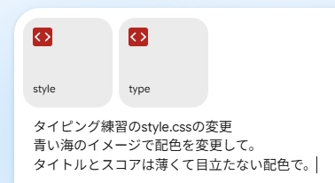

style.css type.css を編集する。
フォルダ内のCSSファイルをstyle.cssに上書きする
style.css type.css を編集する。
フォルダ内のCSSファイルをstyle.cssに上書きする AIでCSSの作成
AIでCSSの作成

/* 背景画像ありの定義 画像なしは none
--body-background-image: url("filename");
*/
/* --- カラー設定 --- */
--body-background-color: #ffffff;
--body-color: #000000;
--title-color: #808080;
--score-color: #808080;
--score-correct-color: #8080f0;
--score-wrong-color: #f08080;
--char-default-color: #000000;
--char-correct-color: #8080f0;
--char-wrong-color: #f08080;
--target-back-color: #f0f0f0;
--editor-back-color: #f0f0ff;
--border-color: #c0c0c0;
--shadow-color: #d0d0d0;
/* --- レイアウト設定 --- */
--line-width: 800px;
--line-font-size: 64px;
--line-height: 1.2;
--line-padding-x: 12px;
--line-border: 2px solid var(--border-color);
--line-shadow: 0 2px 5px var(--shadow-color);
}